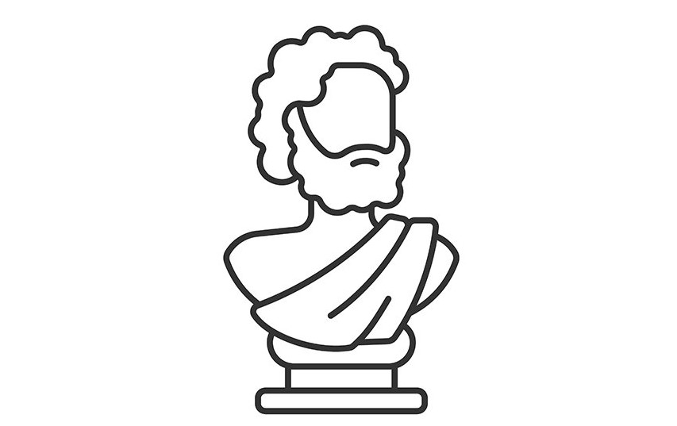

Парменид
501 г. до н.э. – 450 г. н.э.

Детство и юность
О биографии Парменида сохранилось мало информации. Известно, что философ родом из так называемой Великой Греции (сейчас это юг Италии). По утверждению другого философа, Платона, Парменид родился в 475 году до нашей эры в городе Элее. По другой информации, мыслитель родился примерно в 540 году до нашей эры. Также найдены сведения, что Парменид происходил из знатной и обеспеченной семьи и даже участвовал в управлении городом.
Учителями будущего мыслителя стали Ксенофан и Аминий. Парменид жадно впитывал идеи наставников, однако пропускал их через призму собственного мнения, истолковывая по-своему. Когда Аминий умер, Парменид, как преданный ученик, воздвиг философу усыпальницу собственными силами.
Философия Парменида
Основная идея
Главная нить, которой придерживался Парменид, – философия бытия: кроме него ничего не существует. Это связано с невозможностью мыслить, о чем бы то ни было, что не связано неразрывно с бытием. Значит, мыслимое – это часть бытия. Именно на этом убеждении строится теория познания Парменида. Философ ставит вопрос: «Может ли человек проверить существование бытия, ведь это нельзя проверить? Однако, бытие очень тесно связано с мыслью. Из этого можно сделать вывод о том, что оно все-таки наверняка существует».
В первых стихах поэмы «О природе» Парменид, философия которого отрицает возможность всякого существования вне бытия, отводит главную роль в познании разуму. На второстепенной позиции стоят чувства. Истина основывается на рациональном познании, а мнение основывается на чувствах, которые не могут дать истинные знания о сущности вещей, а показать лишь их видимую составляющую.
Главные тезисы
Вся философия Парменида может вместиться в три тезиса:
- Существует только бытие (небытия нет);
- Не только бытие существует, но и небытие;
- Понятия бытие и небытие – тождественны.
Впрочем, за истину Парменид признает только первый тезис.
Из тезисов Зенона до наших времен дошло только девять (предполагается, что всего их было около 45). Наибольшую популярность обрели доказательства против движения. Мысли Зенона подвели к необходимости переосмысления таких важных методологических вопросов, как бесконечность и ее природа, соотношение непрерывного и прерывного и других подобных тем. Математики вынуждены были обратить внимание на непрочность научного фундамента, что, в свою очередь, сказалось на стимулировании прогресса в этой научной области. Апории Зенона сопричастны нахождению суммы геометрической прогрессии, являющейся бесконечной.
Осмысление бытия
С первых моментов зарождения философии идея бытия является логическим средством, выражающим представление мира в виде целостного образования. Философия сформировала категории, выражающие существенные свойства действительности. Главное, с чего начинается осмысление, – это бытие, широкое по объему, но бедное по содержанию понятие.
Впервые на этот философский аспект обращает внимание Парменид. Его поэма «О природе» положила начало метафизическому античному и европейскому мировоззрению. Все различия, которые имеет философия Парменида и Гераклита, базируются на онтологических открытиях и путях постижения истин мироздания. Онтологию они рассматривали с разных сторон.
Мысль
Философия Парменида имеет довольно рациональный подход, что сделало его одним из первых философов, который подошел к разумному мышлению.
Одним из главных столпов мысли Парменида является то, что реальное существо может быть воспринято только разумом, а не чувствами. То есть, только рациональное знание может быть доступно эффективным и правдивым путем рациональности, а не ощущений..
Благодаря этой концепции считается, что Парменид был философом, породившим идеализм, предложенный Платоном. Согласно Пармениду, существо постоянно и уникально. Этот философ указывает, что внутреннее противоречие мешает направленной мысли к поиску бытия.
Мышление
Мысль Парменида подчеркивает, что есть два пути достижения знания; путь истины, называемый Алетейя; и образ мышления, называется Doxa.
Парменид утверждает, что единственный способ достичь знания - это первый путь, и указывает, что второй путь полон противоречий и знаний, которые не реальны, а лишь кажутся.
У мышления есть отправная точка в небытии; то есть в элементах, которые не реальны, не истинны, которые не существуют. Согласно Пармениду, принятие пути мнения подразумевает принятие небытия, которое считается неуместным.
С другой стороны, путь истины постоянно стремится относиться к бытию, называть его и придавать ему всю необходимую важность. Из-за этого Парменид указывает, что это единственный способ приблизиться к реальным знаниям. Затем философ утверждает, что мысль и реальность должны сосуществовать гармонично, без каких-либо противоречий и возражений..
Познание
Наиболее интересными являются положения Парменида относительно сущности мышления и процесса познания. Если в отношении бытия Парменида можно рассматривать как метафизика (бытие есть сущность, т.е. первопричина самого себя, вечное, неделимое и неизменное) с определенной тягой к идеализму (отсутствие движения, времени, развития), то в области гносеологии он проявляет себя как последовательный материалист.
Утверждение Парменида о том, что всякая мысль о предмете и предмет есть одно и тоже, в более поздней философии нередко трактовалась с идеалистических позиций – как утверждение существования лишь субъективно воспринимаемого бытия, идеального по своей сути (первичность идеи по сравнению с предметом). В действительности Парменид придерживался противоположных позиций. Бытие, воплощенное в материи для него первично. Именно бытие выступает источником всякого мышления, поскольку любая мысль может разворачиваться лишь о бытия, так как небытия не существует. Следовательно, мысль привязана к материальному содержанию бытия, сама является частью бытия и материи.
Революционной является идея Парменида о необходимости разделения знаний на два вида:
- Истина
- Мнение
Мнением же Парменид называет такое знание, которое возникло из чувственного источника, в результате наблюдения за природой и окружающим миром, а также устоялось в качестве традиции. Подобное знание может как соответствовать истине, так и нет. В отличии от своих современников и многих философов после, Парменид хоть и превозносит ценности истины, перед мнением, но все же не отказывается от последнего (как например рационалисты нового времени), указывая на необходимость его изучения для организации работы разума.
К числу пророческих идей Парменида, которые не позволяют рассматривать его как всецело реакционного, противостоящего самому духу философии, мыслителя можно отнести мысль о темной природе Луны, т.е. о том, что Луна в отличии от Солнца не является светилом, а лишь отражает свет, а также о влиянии физического состояния человека, его усталости и здоровья на работу мысли и психические процессы.
Разум как основа восприятия
Для Парменида следует учитывать только восприятие, основанное на разуме, которое позволяет нам более плодотворно подходить к знаниям..
Парменид указал, что когда восприятие реагирует на чувства, можно будет достичь только дестабилизирующих элементов, потому что они отражают только постоянно меняющийся контекст.
Итак, реальность, которая проявляется в результате восприятия через чувства, на самом деле не существует, это иллюзия. Это просто видимость реальности, но не о реальности как таковой.
О природе
Единственным известным произведением Парменида была его философская поэма под названием "О природе». В этом стихотворении Парменид рассматривает различные проблемы, такие как бытие, истина, происхождение богов и сама природа..
Величайшей новинкой поэмы была методология ее аргументации, которую Парменид разработал со строгостью. В своем аргументе Парменид сделал обсуждение принципов, которые устанавливают конкретные аксиомы и преследуют их последствия.
Взгляды на мир и космос
В своем философском учении Парменид выступает с резкой критикой пифагорейцев, представителей ионийской школы и непосредственно Гераклита, который был его современником. Парменид отрицает чувственное познание и складывающуюся на его основании картину мира, вводя ряд тезисов:
- Существует лишь бытие
- Мышление может быть только о бытие и тоже представляет собой бытие;
- Не-бытия не существует;
- Поскольку нет не-бытия, то не может быть отделенности вещей друг от друга, а, следовательно, и движения и времени;
- Рождение и разрушение бытия невозможно, бытие вечно и неизменно.
Парменид решительно восстает против идеи пифагорейцев о существовании пустоты, которая отделяет один предмет от другого. Пустота в его понимании представляет собой не-бытие, которого нет. Отсутствие небытия обуславливает целый ряд онтологических выводов Парменида, которые резко критиковались его современниками, об отсутствии отдельных вещей, а также частиц из которых они могли бы состоять. Поскольку нет частиц, то нет возможности и делить вещи на части. Наконец Парменид отрицает само понятие движения, времени, рождения (как появления чего-либо из небытия) и распада (как превращение чего-либо в небытие).
Именно поэтому мир существует в виде единого шара, в котором нет отдельных вещей, а все они слиты в одну. Бытие по своей сути неизменно, однако хотя процесс появления нового, равно как и исчезновения старого невозможен (т.к. в этом случае пришлось бы признать существование небытия), возможно преобразование самого бытия, его трансмутация, переход одних вещей в другие. В данном положении Парменид противоречит сам себе, так как отдельных вещей нет, но они все же преобразуются.
Еще больше противоречий выявляет его космология. Парменид заимствует идеи Анаксимандра о противостоянии света и тьмы, как главной причины всех происходящих явлений, а также взгляды Анаксимена на расположение и движение небесных светил, которого согласно учению Парменида не существует.
Нападки на онтологию Парменида были настолько велики, что его ученику Зенону пришлось прибегнуть к совершенно новому, и крайне сильному способу защиты утверждений учителя – опровержению от противного, который принял форму знаменитых апорий, оспаривающих понятия движения, множественности и т.д
Политическая жизнь
Будучи учеником Ксенофана, Парменид был в непосредственном контакте с управлением политической ситуацией в городе Елеа, он был активным участником нескольких изменений и предложений..
Парменид приехал, чтобы сделать конкретные предложения в области законодательства в своей родной Элее, даже некоторые источники указывают, что он был тем, кто написал законы этого города. Это имеет смысл, потому что Парменид происходил из влиятельной и влиятельной семьи, поэтому он мог иметь доступ к этим властным позициям.
Очень скоро жители этого города положительно оценили предложения Парменида, так как считали, что именно он создал атмосферу изобилия, процветания и гармонии, существовавшую в то время в Элеа.
Его видение в этом отношении оказало такое положительное влияние на граждан, что даже возник термин, связанный с образом жизни Парменида: «Жизнь Парменида». Эта концепция стала идеалом, которого жители Элеи хотели достичь.
Развитие Элейской школы
Среди его вкладов было развитие элейской школы. Там Парменид стал вовлеченным в философскую деятельность, которая пыталась дать причины, объясняющие способ каталогизации существа из идей этой школы.
В то время как некоторые авторы утверждают, что Парменид был основателем элеатской школы, другие утверждают, что именно Ксенофан был истинным основателем. Тем не менее, существует общее мнение, что Парменид является наиболее представительным философом этой школы.
Философские дискуссии
Среди вклада Парменида можно считать его критиков Гераклиту, который выразил принципы трансформации и показал, что не было неподвижного существа, которое осталось прежним.
Согласно Пармениду, Гераклит сделал все невозможное, когда говорил, что все течет и ничего не осталось. Эта дискуссия среди досократиков была одним из столпов развития философии, и многие авторы до сих пор работают над этими идеями.
Материализм
Парменид в своей работе развивает идеи, близкие к материализму, что способствовало развитию этого направления мысли.
Соображения Парменида о движении и постоянстве бытия каталогизируются некоторыми как идеи материализма. Это основано на том факте, что эти идеи отрицают иллюзорный мир перемен и движения и фокусируются на материальном, существующем и недвижимом.
Влияние на философию отрицания
Некоторые философы основывают свою работу на том, что они считают отрицанием разумного мира Парменидом. Это соображение привело к развитию идеалистической философии, хотя это отрицание не выражено буквально в работе Парменида.
Различные интерпретации того, как он написал свое стихотворениеО природе«Они утверждают, что Парменид не только отрицал существование пустоты как физического вакуума, но и отрицал существование разумного мира как такового.
Личная жизнь
О личной жизни философа не сохранилось никаких сведений. Неизвестно, была ли у Парменида семья или же мыслитель посвятил жизнь философским раздумьям и собственному поэтическому трактату.
Смерть
Также нет достоверной информации и о смерти великого мыслителя. По одной версии, при жизни философ, а также элеаты (последователи учения Парменида) подвергались гонениям и преследованиям за высказанные идеи, а самого мыслителя казнили, в назидание остальным. По другой же — учение Парменида было доступно только узкому кругу единомышленников философа, который благополучно дожил до глубокой старости.
Как бы то ни было, можно с уверенностью утверждать, что идеи Парменида оказали влияние на развитие философии того времени, а также до сих пор обсуждаются и оспариваются людьми, не равнодушными к проблемам бытия.
Также очевидно, что учение Парменида, цитаты из которого до сих пор вызывают интерес, стали фундаментом для трудов европейских философов более позднего времени. Кто знает, возможно, без трактата «О природе» развитие европейской культуры проходило бы кардинально в другом русле.
Вклад в философию
При общности фундаментальных понятий рассуждения Зенона содержали целый ряд дополнительных положений и аргументов, которые он изложил более строго. На многие вопросы Парменид сделал лишь намек, а Зенон смог их подать в развернутом виде.
Учение элеатов направляло мысль на разделение интеллектуального и чувственного познания вещей, изменяющихся, но имеющих в себе особую неизменную составляющую – бытие. Введение понятий «движение», «бытие» и «небытие» в философии, принадлежит именно Элейской школе, основателем которой был Парменид. Вклад в философию этого мыслителя трудно переоценить, хоть его взгляды и не получили слишком много приверженцев.
Зато Элейская школа представляет существенный интерес для исследователей, очень любопытна, так как является одной из древнейших, в учении которой философия и математика тесно переплелись.